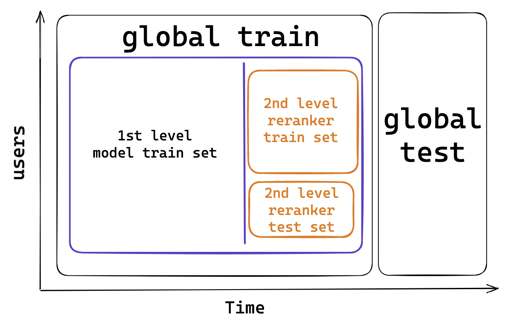

Validation and Metrics#
In this chapter, we will go through the validation and evaluation of ML models in general and move on to specific metrics related to recommendation systems. First, we will define validation, why we need it, and what types are frequently used. Then, we will define some metrics with examples of calculation so it is convenient for everyone.
Validation Methods#
Training a recommendation system is a complex process, requiring careful consideration of several different aspects. One of the key steps in the recommendation system training pipeline is the validation process too. This process is essential for ensuring that the data used to train the model is accurate and that the model is performing as expected.
Validation is a process that assesses the performance of the model and can help to detect any issues or biases in the data that could impact the performance of the model in production. Without validation, it is impossible to know whether the model is correctly capturing user preferences and providing accurate recommendations. The validation process also helps to detect any potential problems that could arise during the training process such as overfitting or under-fitting of the data, some errors in data collection, etc.
In general, the validation process typically involves splitting the data into train and test sets. The train set is used to build and train the model, while the test set is used to measure the performance of the model and detect any issues in the data. The results of the validation process indicate how well the model can capture general patterns and provide accurate predictions.
Validation can be carried out using many different methods such as the holdout method,
k-fold, stratified k-fold, leave-p-out, and time-based. These methods are popular methods of
validation in which the data is divided into multiple subsets which are then used in multiple
rounds of training and testing.
holdout method- we just divide our data into three parts: train, test, and validation. Train will be used for model training, test for performance estimation, and validation as a final check on unseen data;k-fold- we divide data into two sets: train and test. Then, we train the model using the only train. K-fold allows us to divide the train set into k subsets. Then we iterate over each subset and leave it as hold out set to estimate model performance and k-1 is used for training;stratified k-fold- it is similar to the classic k-fold with a modification that overcomes imbalanced targets. It samples data such that each fold have approximately the same number of distinct target values;leave-p-out- we use p observations for test and (n - p) as train set. Once the training is done on (n - p), p data points are used for validation. All possible combinations of p are tested on the model to get the highest model performance
All aforementioned approaches can be found in scikit-learn library. Moreover, Machine Learning Simplified book provides a great overview of the methods here
time-based- we need it more in time series problems. Intuitively, we define the training window and test window. Then, we go through our data with a sliding window - compute loss at each step - average in the end. Example of implementation is here and another implementation with cumulative approach in scikit-learn
Finally, validation helps to ensure that the model is not biased in any way. This is especially important in the case of recommendation systems, as they are often used to recommend products and services to users. If the data used to train the model is biased, the model’s predictions may not reflect user preferences accurately, leading to an inaccurate and potentially unfair recommendation system. Validation helps to detect any potential bias in the data, which can then be addressed by adjusting the model parameters or using a different data set. So, what’s the appropriate way for recommender systems? The answer is – time-based split. We define a time interval for the test set and use all data up to the test set start date. However, it is for the first-level models. In practice, taking into account re-ranker, We have a more complicated split. Here are the steps:
Create global train and test by time splitting;
Use the global train and split again by time – let’s call it local_train and local_test;
Use local_train to train the first-level model to generate candidates and predict on local_test;
Use local_test and
split by usersinto ranker_train, ranker_test to train ranker on ranker_train and validate on ranker_test;Finally, make predictions for the global test using the first-level from step 3 and reranker from step 4 The scheme is defined below

The code below imitates splitting into global train and test by date
import pandas as pd
import datetime as dt
TRAIN_MAX_DATE = dt.datetime(2023, 2, 14) # define last date to include in train set
TEST_INTERVAL_DAYS = 14 # define number of days to use for test
TEST_MAX_DATE = TRAIN_MAX_DATE + dt.timedelta(days = TEST_INTERVAL_DAYS)
# create artificial df
df = pd.DataFrame({'date_time': [], 'values': []})
global_train = df.loc[df['date_time'] <= TRAIN_MAX_DATE].reset_index(drop = True)
global_test = df.loc[(df['date_time'] > TRAIN_MAX_DATE) \
& (df['date_time'] <= (TEST_MAX_DATE))].reset_index(drop = True)
Also, we should consider cold \ warm start problems:
Cold Start - we do not have any interactions in train and test sets;
Warm Start - we did not have anything in the train set, but interactions appear during the test set
Metrics#
When developing machine learning models, evaluation metrics are an essential part of the process. There are a variety of metrics that can be used, each with its own benefits and drawbacks, and understanding them is key to creating successful models.
Firstly, evaluation metrics allow us to measure the performance of our models. Without these metrics, we would not be able to gauge the success of our models, as there would be no objective way to measure how well our models were performing. Evaluation metrics also provide an objective method of comparing different models so that we can select the best one for the task at hand.
Secondly, evaluation metrics can be used to identify the strengths and weaknesses of our models. By using such metrics we can identify which areas of our model are performing well, as well as which areas need improvement. This information can then be used to refine our models and improve their performance.
Finally, evaluation metrics can be used to assess the generalizability of our models. In other words, how well the models will perform in unseen data. This is important for any machine learning model, as the ultimate goal is to create models that can generalize well and successfully make predictions on data that has not been seen before.
Regression#
Mean Absolute Error (MAE) = \(\frac{1}{N} \sum_{i=1}^{D}|x_i-y_i|\)
Mean Squared Error (MSE) = \(\frac{1}{N} \sum_{i=1}^{D}(x_i-y_i)^2\)
What is their baseline by the way? :)
Classification (Confusion Matrix)#
From classification tasks, we can use standard metrics that are widely used. Below, there is a well-known confusion matrix. Based on that matrix we can calculate various metrics like Precision and Recall. Their formulae and definition we will discuss later, but for now, let’s elaborate on what each of the events means in terms of recommendations.
Positive |
Negative |
|
|---|---|---|
Positive |
True Positive |
False Positive |
Negative |
False Negative |
True Negative |
TP- we recommended an item and user interacted;FP- we recommended an item and user did not interact;FN- we did not recommend an item, but user interacted with it;TN- we did not recommend an item and user did not interact
Now, let’s define the most popular metrics for recommendations based on classification metrics - Precision@K & Recall&K.
First, you need to understand what @K stands for. In recommendations, we return some list of items in a given order.
Thus, we want to know, how many interactions we got from that list and therefore some threshold must be set to cut the
list length. For example, we recommended 100 movies, but usually, users do not scroll more than 20 of them and we want
to estimate our metric only on a subset of recommendations - top-20 positions and that would be Precision@20 & Recall@20.
Precision@K- share of relevant items in a list. Formula is \(\frac{TP}{TP + FP}\). Also, \(TP + FP\) is K - total number of items and the formula simplifies to \(\frac{TP}{K}\)
import numpy as np
def precission_at_k(y_true: np.array, y_pred: np.array, k: int) -> float:
"""
y_true: true labels
y_pred: predicted lables
k: cutoff length
"""
if sum(y_true) == 0:
return -1
argsort = np.argsort(y_pred)
y_true_sorted = y_true[argsort]
true_positives = y_true_sorted[:k].sum()
return true_positives / k
# example array
y_true = np.array([1, 0, 0, 1, 0, 0])
y_pred = np.array([0, 0, 1, 1, 0, 0])
# check
precission_at_k(y_true, y_pred, k = 6)
0.3333333333333333
Recall@K- share of relevant items in a list of recommendations. Formula is \(\frac{TP}{TP + FN}\), where \(TP + FN\) is number of known interactions (relevant items).
# TO BE DONE WHEN HOMEWORK FROM STUDENTS IS SUBMITTED
Ranking#
Using regression or classification metrics we evaluate the predicted values of the model, but not real relevance.
In recommendations, we need both positive interaction and relevant items to be as high as possible. This is not
possible using those metrics. Thus, ranking metrics have been incorporated for such tasks. In general,
they consider both positive interactions with higher weights for those items that are higher in order.
The most popular ones are Mean Reciprocal Rank, Mean Average Precision, and Normalized Discounted Cumulative Gain.
Mean Reciprocal Rank (
MRR) is an average inverse rank. Formula is \(\frac{1}{N} \sum_{i=1}^{N}\frac{1}{rank_i}\)
user_id |
rekkos_list |
interaction |
rank |
reciprocal rank |
|---|---|---|---|---|
1 |
[batman, haryy potter, ozark] |
batman |
1 |
1/1 |
2 |
[ozark, thor, something] |
something |
3 |
1/3 |
3 |
[something, harry potter, batman] |
None |
0 |
0 |
Then, according to our formula \(MRR = (\frac{1}{1} + \frac{1}{3} + 0) / 3 = 0.44\). Keep in mind that only the rank of the first relevant answer is considered, possible further relevant answers are ignored.
def reciprocal_rank(y_true: np.array, y_pred: np.array) -> float:
argsort = np.argsort(y_pred)[::-1]
y_true_sorted = y_true[argsort]
for i, val in enumerate(y_true_sorted, 1):
if val == 1:
return 1 / i
return 0
Mean Average Precision at K (
MAP@K) - average precision by users. Formula is divided into two parts:Average Precision at K by user (
AP@K) = \(\frac{1}{r_user} \sum_{i=1}^{K}Precision@i * rel_i\), where \(K\) - number of recommendations, \(r_user\) - number of releveant items for a user\(MAP@K = \frac{1}{N} \sum_{i=1}^{N}AP@K(user_i)\)
user_id |
movie |
interaction |
Precision@K |
|---|---|---|---|
1 |
ozark |
1 |
1/1 |
1 |
batman |
0 |
1/2 |
1 |
harry |
0 |
1/3 |
1 |
thor |
1 |
2/4 |
1 |
something |
0 |
2/5 |
1 |
something2 |
0 |
2/6 |
AP@6 = \(\frac{1}{2} * (\frac{1}{1} * 1 + \frac{1}{2} * 0 + \frac{1}{3} * 0 + \frac{2}{4} * 1 + \frac{2}{5} * 0 + \frac{2}{6} * 0)\) = 0.75
The total number of relevant items for a user is 2, therefore we multiply by 1/2.
Looking at the first rank, we see that the user interacted with our recommendation and
according to our formula, we get 1/1 and multiply by relevance 1. Then, in the following
one we do not have interaction, our Precision@2 is 1/2, and multiplying by relevance 0
we get 0. Further, we do the same logic and come to the resulting 0.75 MAP@6 (because we have only 1 user in the example).
The code relies on Precision@K from the above, but if you want – you can add it yourself.
Now, what is MAP@3? :)
Normalized Discounted Cumulative Gain (NDCG)- averaged accuracy by users where only rank is needed to determine the metric. The formula is complex and looks like \(\mathrm{nDCG@K} = \frac{DCG_{k}}{IDCG_{k}}\). Now, let’s dive into numerator and denominator to understand the logicCumulative Gain (
CG) is the sum of the graded relevance values of all results in a ranked result list. The value computed with theCGfunction is unaffected by changes in the ordering of ranked results. Thus, moving relevant item higher than irrelevant item does not changeCGvalue Formula is \(\mathrm{CG_{k}} = \sum_{i=1}^{k} rel_{i}\); As you can see, if we have a binary relevance label then it is exactly equal to Precision.Discounted Cumulative Gain (
DCG) - the premise ofDCGis those relevant items that appear lower in a recommendation list result list should be penalized as the graded relevance value is reduced logarithmically proportional to the position of the result. Formula is \(\mathrm{DCG_{k}} = \sum_{i=1}^{k} \frac{ 2^{rel_{i}} - 1 }{ \log_{2}(i+1)}\). This already gives a lot of information, but how do we know which value is good? To achieve that, we need to calculate what would be the best value for a given set of data. For that, Ideal DCG has been introducedIdeal DCG (
IDCG) is calculated as follows \(\mathrm{IDCG@K} = \sum_{i=1}^{|REL_k|} \frac{ rel_{i} }{ \log_{2}(i+1)}\)
Let’s consider an example, where we recommended 6 movies with relevance scores defined as [3, 2, 3, 0, 1, 2]. In the table, the calculation using the above formula is shown to get CG@6, DCG@6, IDCG@6, and finally NDCG@6.
\(i\) |
movie |
\(rel_{i}\) |
\(\log_{2}(i+1)\) |
\(\frac{ 2^{rel_{i}} - 1 }{ \log_{2}(i+1)}\) |
|---|---|---|---|---|
1 |
ozark |
3 |
1 |
7 |
2 |
batman |
2 |
1.585 |
1.893 |
3 |
harry |
3 |
2 |
3.5 |
4 |
thor |
0 |
2.322 |
0 |
5 |
something |
1 |
2.585 |
0.387 |
6 |
something2 |
2 |
2.807 |
1.069 |
Thus, \(\mathrm{DCG@6} = 7 + 1.893 + 3.5 + 0 + 0.387 + 1.069 = 13.849\) and \(\mathrm{IDCG@6}\) would be calculated as monotonically decreasing order by relevance [3, 3, 2, 2, 1, 0] and \(\mathrm{IDCG@6} = 7 + 4.416 + 1.5 + 1.292 + 0.387 + 0 = 14.595\) and \(\mathrm{nDCG@K} = \frac{DCG_{k}}{IDCG_{k}} = \frac{13.849}{14.595} = 0.95\)
The code ofr $\mathrm{nDCG@K} is divided into 3 parts:
compute_gain() - it relates to our numerator. In our example we used \(2^{rel_{i} - 1}\), but in reality we can set it to constant;
dcg() - computes Discounted Cumulative Gain;
ndcg() - final function that computes \(\mathrm{nDCG@K}\)
from math import log2
def compute_gain(y_value: float, gain_scheme: str) -> float:
gain = {'exp2': 2 ** y_value - 1,
'const': y_value}
return float(gain[gain_scheme])
def dcg(y_true: np.array, y_pred: np.array, gain_scheme: str) -> float:
dcg = 0
argsort = np.argsort(y_pred)[::-1]
y_true_sorted = y_true[argsort]
for idx, val in enumerate(y_true_sorted, 1):
gain = compute_gain(val, gain_scheme)
dcg += gain / log2(idx + 1)
return dcg
def ndcg(y_true: np.array, ys_pred: np.array, gain_scheme: str = 'const') -> float:
# pred dcg then we calc the same to find max possible
preds_dcg = dcg(y_true, ys_pred, gain_scheme)
max_possible_dcg = dcg(y_true, y_true, gain_scheme)
return preds_dcg / max_possible_dcg
y_pred = np.array([6, 5, 4, 3, 2, 1]) # some score to sort
y_true = np.array([3, 2, 3, 0, 1, 2])
print(ndcg(y_true, y_pred, 'exp2'))
0.9488107485678985
Your turn, get NDCG@3 and modify code such that @K is considered :)